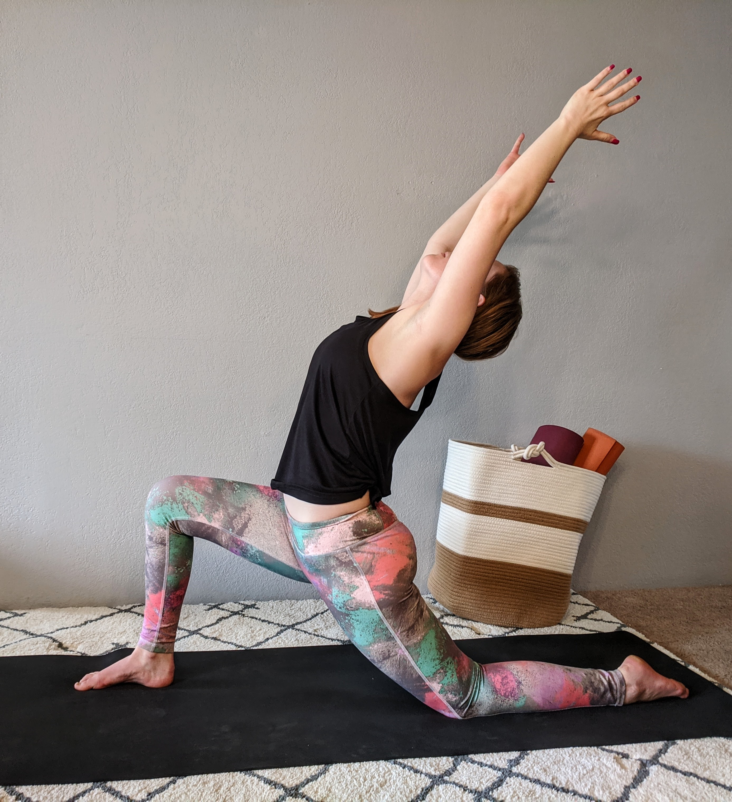
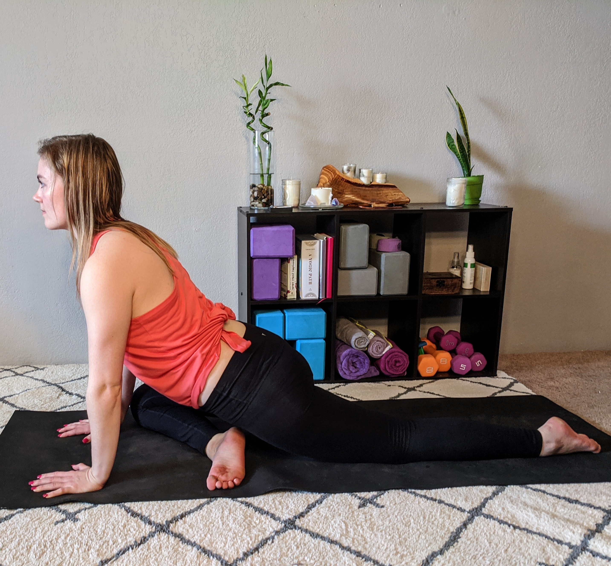

Offerings
I teach classes online for individuals and also offer Corporate Wellness Plans.
You can find FREE classes online on my YouTube channel, “Wellness with Rachelle”.
See below for more information on the types of classes I offer.
Vinyasa

Vinyasa = connection of movement + breath. Expect a gradual progression of
poses and sequences. We start slow and work through each pose individually
to work on alignment, often holding poses for a few breaths. Once we have our
alignment, we progress into one breath per movement and get in a flow.
Power Vinyasa

Power vinyasa is very similar to vinyasa described, but expect to sweat more and
be more challenged. This class works on stamina, strength, flexibility and endurance
whereas vinyasa focuses mostly on flexibility. We will still flow, but plan to pause
for specific strengthening moves such as ab exercises to strengthen our core.
Meditation

Plan to sit still (in a comfortable position) to open and focus your mind in order to
observe your thoughts and feelings without judgement. This powerful practice is a great
manifestation tool and can help you clear your thoughts, become calm, increase
self-awareness, reduce stress and negativity, and find inner peace.
Meditation is a practice and skill to develop, so it may take time to get comfortable sitting still with your mind. Remember, the journey is more important than the destination.
Meditation is a practice and skill to develop, so it may take time to get comfortable sitting still with your mind. Remember, the journey is more important than the destination.
Yin Yoga

Yin is considered the opposite to Vinyasa yoga which can often be considered as a “yang” style
of yoga. Unlike vinyasa which focuses on your muscles, yin yoga focuses on deep connective tissues.
Yin is a slower, more meditative practice where most poses are held for 3-5min and sometimes longer.
Vin Yin Yoga

As the name suggests, this class is a combination of both Vinyasa and Yin practices. The first half
of the class is Vinyasa to warm up the body and release extra energy to prepare you to lengthen muscles
and relax during Yin in the second half of the class. This style class is a perfect way to get curious
about what Yin has to offer for those who typically practice Vinyasa.